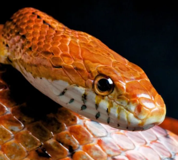
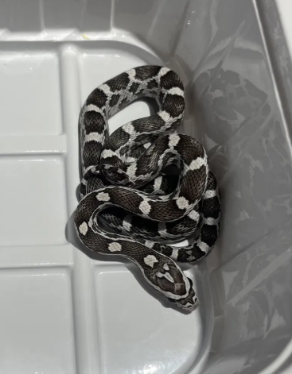

Węże zbożowe
- odżywiają się myszami
- w warunkach domowych potrzebują sporego terrarium, podłoże, miskę z wodą, lampę grzewczą lub matę grzewczą
- żyją do 21 lat
- naturalnie żyją w południowo-wschodnich i centralnych Stanach Zjednoczonych, od Florydy i Karoliny po Luizjanę i Kolorado